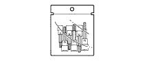
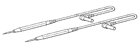

AIRBAG SYSTEM > B1000/31 > Preparation

| Torque wrench | Airbag disposal |
| Bolt Length: 35.0 mm (1.378 in.) Diameter: 6.0 mm (0.236 in.) Pitch: 1.0 mm (0.039 in.) | Airbag disposal |
| Tire Width: 185 mm (7.28 in.) Inner diameter: 360 mm (14.17 in.) | Airbag disposal |
| Tire with disc wheel Width: 185 mm (7.28 in.) Inner diameter: 360 mm (14.17 in.) | Airbag disposal |
| Plastic bag | Airbag disposal |
| Wire harness | Airbag disposal |
| Battery | Airbag disposal |
| Tape | Airbag disposal |
 | 09010-3C120 | Set, "TORX" Socket Wrench | - |
 | (09013-1C120) | "TORX" Socket Wrench T-type T30 | - |
 | 09042-00010 | "TORX" Socket T30 | - |
 | 09082-00040 | TOYOTA Electrical Tester | - |
 | 09083-00170 | Test Lead set No.2 | - |